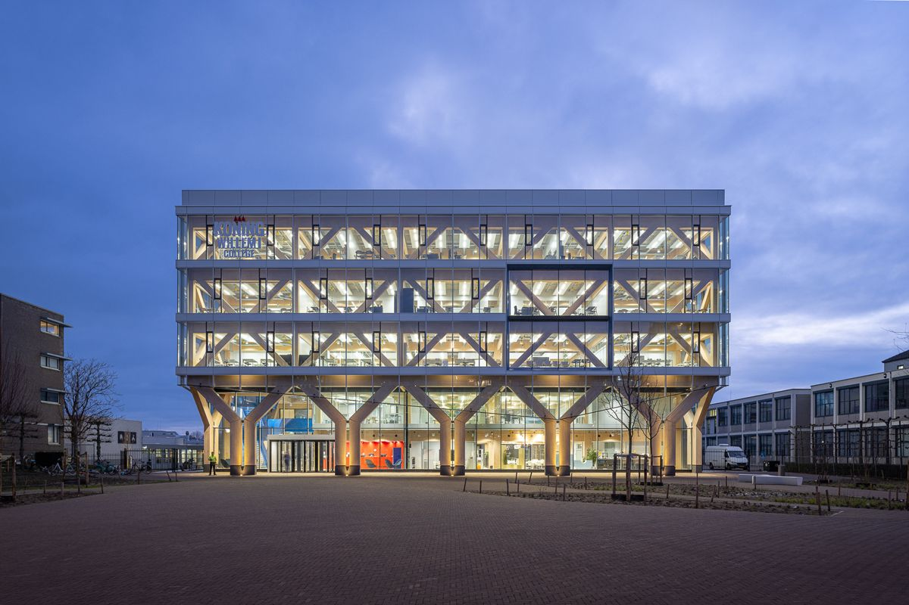
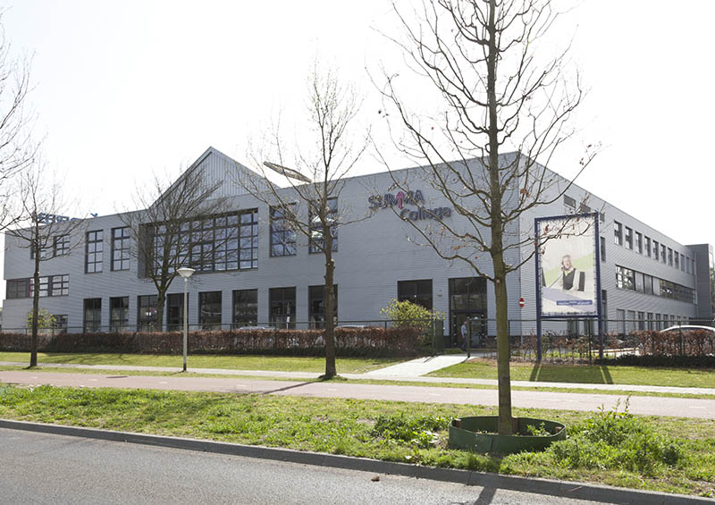
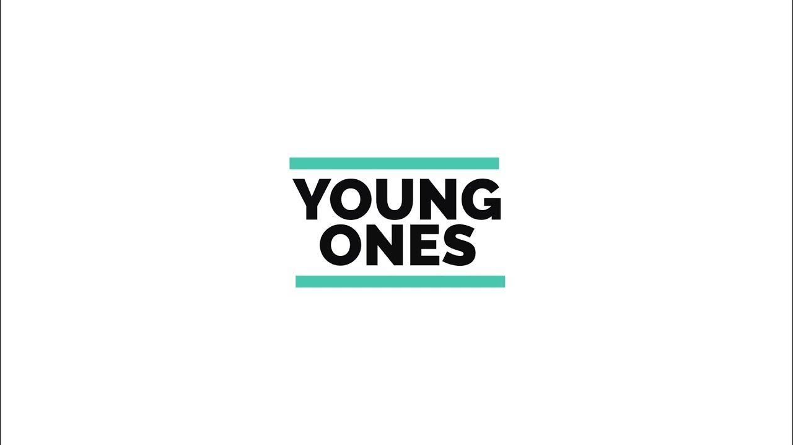
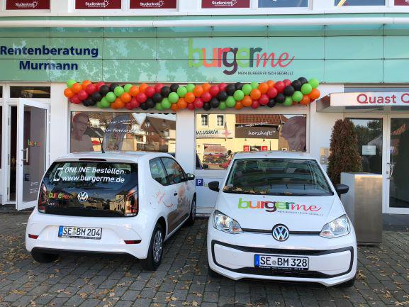

Ik ben een eerstejaars student bij het Koning Willem I College en ik volg de opleiding Software Development
Mijn Studie/werk route

Dit is het Koning Willem I College, waar ik momenteel studeer. Meer informatie over mijn opleiding vind je via deze link.

Dit is het Summa College, waar ik de opleiding Verkoper heb gevolgd.
Dit is mijn middelbare school in Helmond. Ik heb hier vier jaar op gezeten.

Ik werk als freelancer op meerdere platforms zoals YoungOnes.

Ik werk momenteel bij BurgerMe als bezorger met de auto.
Ik werk ook als freelancer op platforms zoals Temper.